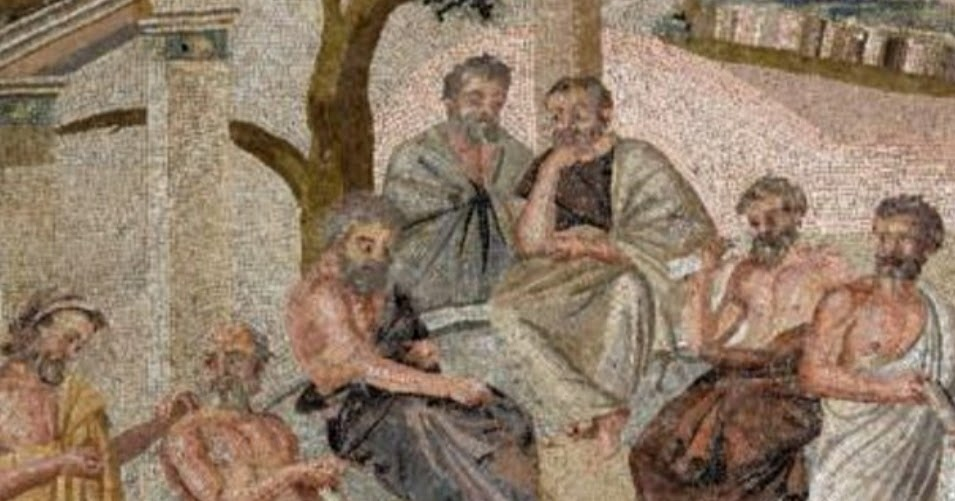

Welcome to the Mathematical World!
Eutocius of Ascalon
Preserver and Commentator of Hellenistic Geometry
Eutocius of Ascalon (early 6th century CE) was a Byzantine mathematician and commentator whose work primarily involved preserving and elucidating the writings of Archimedes and Apollonius. His commentaries are crucial for understanding Hellenistic mathematics, as they transmit results, alternative proofs, and historical notes that would have otherwise been lost.
Eutocius wrote detailed notes on Archimedes’ treatises, such as On the Sphere and Cylinder and On the Measurement of the Circle, often providing step-by-step reconstructions of proofs. He clarified methods for determining areas, volumes, and centers of gravity, sometimes using early forms of infinitesimal reasoning. For example, in discussing the volume of a sphere, he explained the relation: \[ V_{\text{sphere}} = \frac{4}{3}\pi r^3 \] showing Archimedes’ geometric derivation.
In his commentary on Apollonius’ Conics, Eutocius carefully analyzed propositions about ellipses, parabolas, and hyperbolas, clarifying the original text’s difficult arguments and providing historical context for methods like the duplication of the cube and trisection of the angle.
Eutocius’ work ensured that Byzantine, Arabic, and later European mathematicians could access the depth of Greek geometry. By emphasizing clarity, completeness, and the historical development of mathematical ideas, he acted as both transmitter and interpreter, safeguarding a lineage of mathematical thought at a critical time when original Hellenistic texts were fragile and dispersed.
His writings are still studied today as both historical documents and technical guides to classical geometric methods, highlighting the enduring value of preservation and commentary in mathematics.